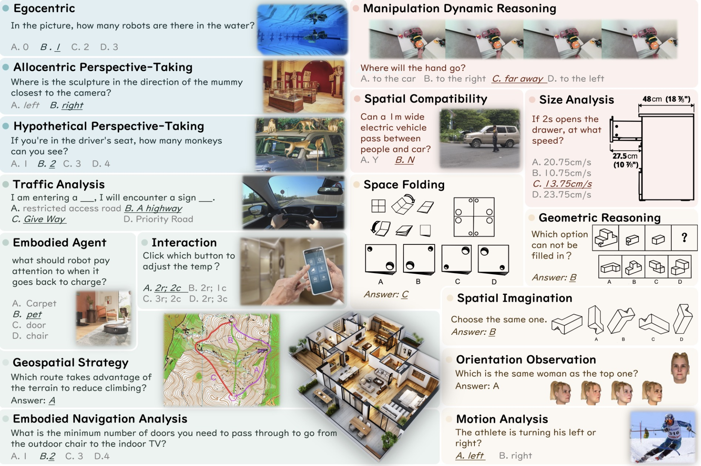

|
Xinqiang Yu | 于新强 Now, I am a jointly trained PhD candidate, supervised by Prof. He Wang (Peking University, Galbot) and Prof. Zhaoxiang Zhang (Institute of Automation, Chinese Academy of Sciences). And I am also honored to have received guidance from Prof. Li Yi (Tsinghua University, Galbot).Before that, I obtained my B.S. in Software Engineering from Liaoning Technical University. And I got my master degree from Institute of Computing Technology, Chinese Academy of Sciences, supervised by Prof. Chuanguang Yang, Prof. Zhulin An and Prof. Yongjun Xu. My research focuses on Dexterous Manipulation(Embodied Intelligence), 3D Computer Vision and Multimodal Large Language Models. |
{kind=link}
Publications*: equal contribution; †: corresponding author(s) |
|
DexVLG: Dexterous Vision-Language-Grasp Model at Scale
Jiawei He*, Danshi Li*, Xinqiang Yu*, Zekun Qi, Wenyao zhang, Jiayi Chen, Zhaoxiang Zhang, Zhizheng Zhang, Li Yi, He Wang† Under review |
|

|
DexGraspNet 2.0: Learning Generative Dexterous Grasping in Large-scale Synthetic Cluttered Scenes
Jialiang Zhang*, Haoran Liu*, Danshi Li*, Xinqiang Yu*, Haoran Geng, Yufei Ding, Jiayi Chen, He Wang† CoRL, 2024 project page / arXiv / code |
|
Multi-Teacher Knowledge Distillation with Reinforcement Learning for Visual Recognition
Chuanguang Yang, Xinqiang Yu, Han Yang, Zhulin An, Chengqing Yu, Libo Huang, Yongjun Xu, AAAI, 2025, Oral paper / code |
|
|
Online Policy Distillation with Decision-Attention
Xinqiang Yu, Chuanguang Yang, Chengqing Yu, Libo Huang, Zhulin An, Yongjun Xu, IJCNN, 2024 Paper |
|
|
SoFar: Language-Grounded Orientation Bridges Spatial Reasoning and Object Manipulation
Zekun Qi *, Wenyao Zhang *, Yufei Ding *, Runpei Dong, Xinqiang Yu, Jingwen Li, Lingyun Xu, Baoyu Li, Xialin He, Guofan Fan, Jiazhao Zhang, Jiawei He, Jiayuan Gu Xin Jin Kaisheng Ma Zhizheng Zhang He Wang Li Yi Under review project page / arXiv / code / huggingface |
|
|  |
OmniSpatial: Towards Comprehensive Spatial Reasoning Benchmark for Vision Language Models
Mengdi Jia*, Zekun Qi*, Shaochen Zhang, Wenyao Zhang, Xinqiang Yu, Jiawei He, He Wang, Li Yi Under review project page / arXiv / code / huggingface |
|
Categories of Response-Based, Feature-Based, and Relation-Based Knowledge Distillation
Chuanguang Yang, Xinqiang Yu, Zhulin An, Yongjun Xu Advancements in Knowledge Distillation: Towards New Horizons of Intelligent Systems (Springer Book Chapter), Invited Survey Paper arXiv |
|
|
CLIP-KD: An Empirical Study of CLIP Model Distillation
Chuanguang Yang, Zhulin An, Libo Huang, Junyu Bi, Xinqiang Yu, Han Yang, Boyu Diao, Yongjun Xu CVPR, 2024 paper, Code |
|
|
Exemplar-Free Class Incremental Learning via Incremental Representation
Libo Huang, Zhulin An, Yan Zeng, Chuanguang Yang, Xinqiang Yu, Yongjun Xu paper |
Honors and Awards |
| China National Scholarship / 0.2% |
|
First-Class College Scholarship / |
|
Template stolen from Jon Barron.
|